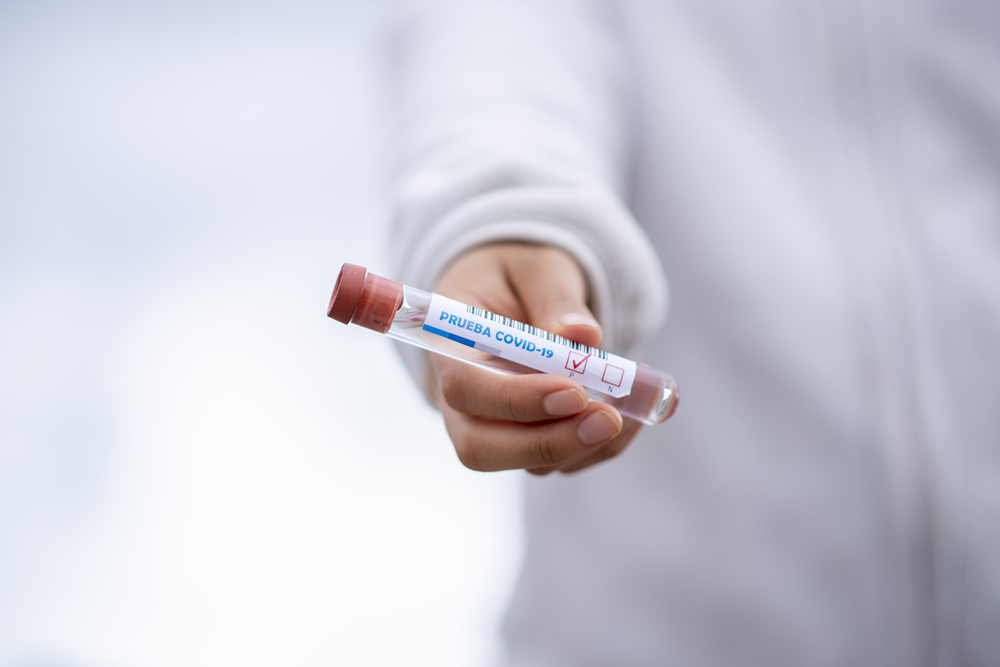
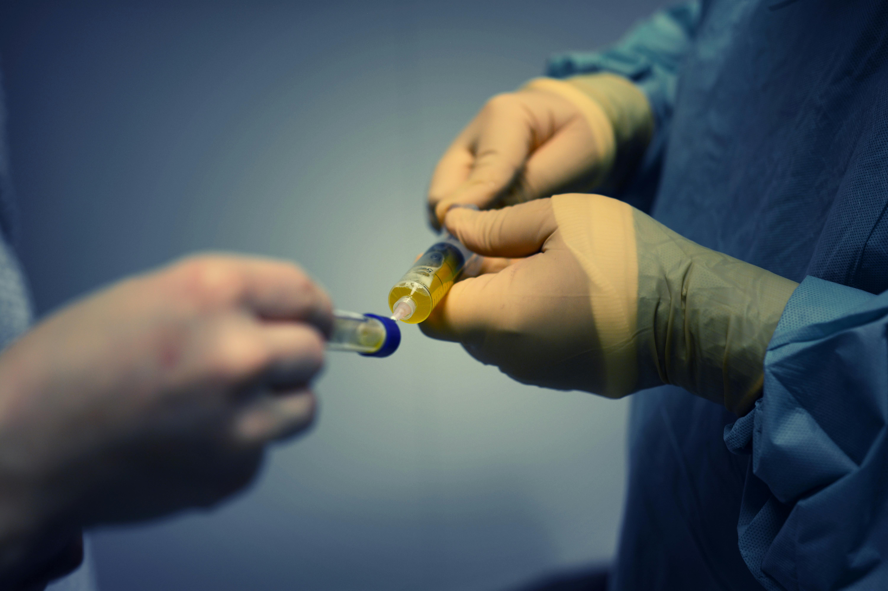

Notre galerie
Quelques images illustrant les espaces et les services de notre établissement.

Notre établissement
Un environnement dédié à la santé.

Service de pédiatrie
Des soins adaptés aux enfants.

Service d'orthodontie
Des soins spécialisés pour la santé dentaire.

Imagerie médicale
Des examens pour faciliter le diagnostic.

Espaces de soins
Un cadre adapté à l'accueil des patients.

Accompagnement médical
Une attention portée au bien-être des patients.